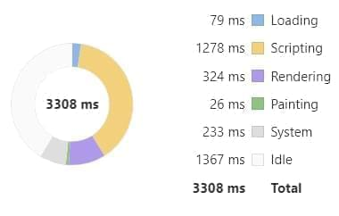
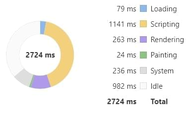
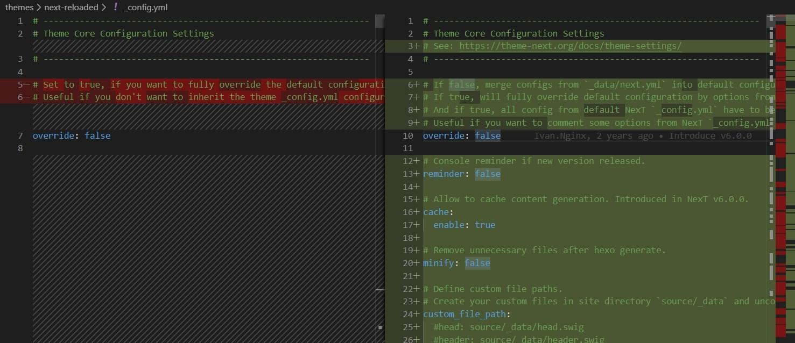

這個網站建立快三年了，這段期間完全沒動過框架。
今天心血來潮，來更新一下這個網站所使用的 Hexo 和 Next。
更新 Hexo-CLI
版本為 1.1.0 → 3.1.0，過程一切正常。
更新 Hexo
Hexo 與專案相依的 Lib 可以直接透過npm-upgrade來找出最新版本，安裝執行後它會更新package.json，再使用npm update把它們全部升級。
1
2
3
| npm install -g npm-upgrade
npm-upgrade
npm update
|
1
2
3
4
5
6
7
8
9
10
11
12
13
14
15
16
17
18
| gulp-htmlclean ^2.7.15 → ^2.7.22
gulp-htmlmin ^3.0.0 → ^5.0.1
gulp-imagemin ^3.4.0 → ^7.1.0
gulp-uglify ^3.0.0 → ^3.0.2
hexo ^3.8.0 → ^4.2.1
hexo-algolia ^1.2.3 → ^1.3.1
hexo-deployer-git ^0.3.1 → ^2.1.0
hexo-filter-github-emojis ^1.4.3 → ^2.1.0
hexo-generator-archive ^0.1.4 → ^1.0.0
hexo-generator-category ^0.1.3 → ^1.0.0
hexo-generator-feed ^1.2.2 → ^2.2.0
hexo-generator-index ^0.2.0 → ^1.0.0
hexo-generator-sitemap ^1.2.0 → ^2.0.0
hexo-generator-tag ^0.2.0 → ^1.0.0
hexo-renderer-ejs ^0.3.0 → ^1.0.0
hexo-renderer-marked ^0.3.0 → ^3.0.0
hexo-renderer-stylus ^0.3.1 → ^1.1.0
hexo-server ^0.2.0 → ^1.0.0
|
更新完後實際執行，看一下效能比較，升級果然有差，速度已經快了不少。
Before

After

更新 Next
官方有提供升級指南，先將最新版本 Clone 下來。
1
| git clone https://github.com/theme-next/hexo-theme-next themes/next-reloaded
|
再將 Hexo 設定檔_config.yml內的 theme 改為next-reloaded。
1
2
3
4
| # Extensions
## Plugins: https://hexo.io/plugins/
## Themes: https://hexo.io/themes/
theme: next-reloaded
|
最後，將新舊版的 Next 設定檔進行 Diff 比較，參考舊的進行配置；下圖可以看到，兩個檔案的差異看似很多，其實只是多了一些細節設定，整體來說大同小異。

更新結語
在這次的升級過程中，最大的意外就是沒發生任何意外，明明是間隔兩年、跨越多個版本的升級，真是不得不佩服這些專案的維護團隊。
參考資料
Hexo版本升级和Next主题升级之坑